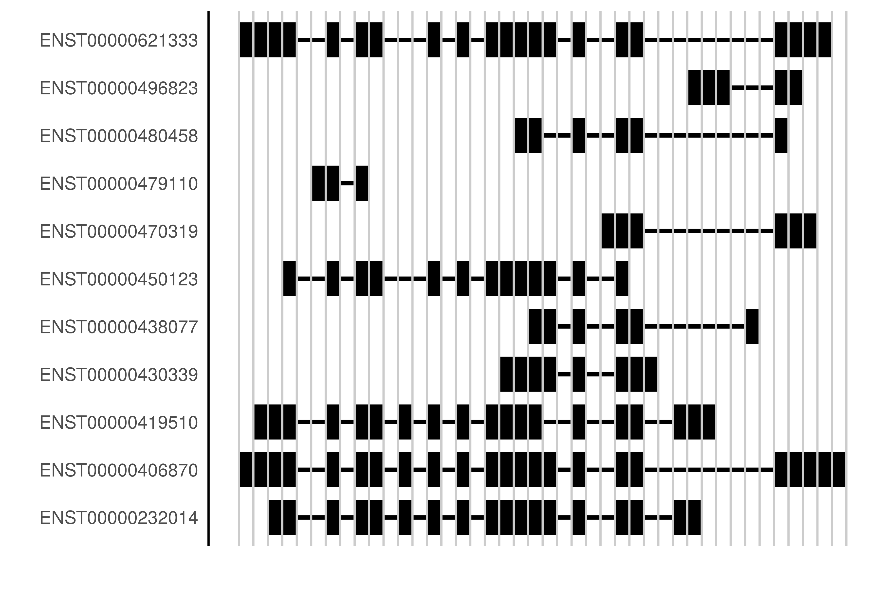
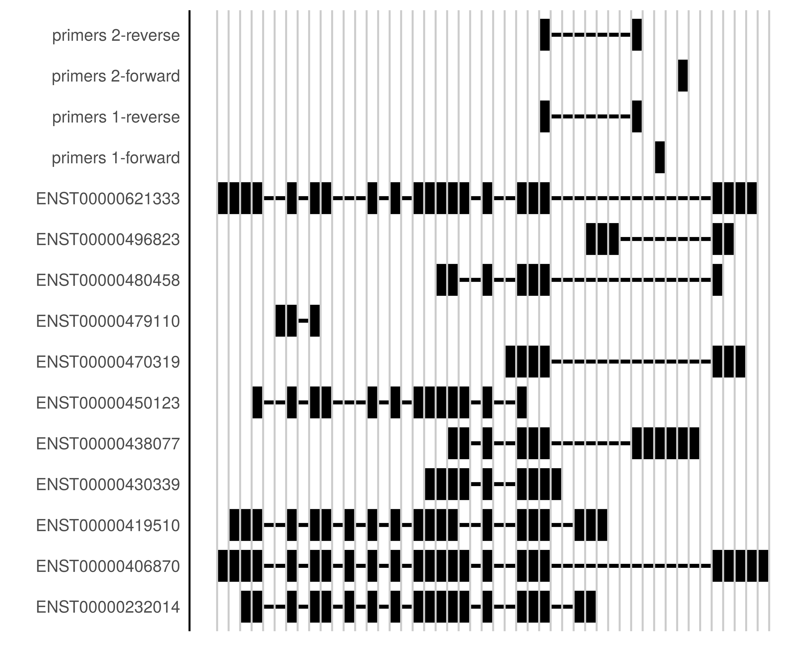

The package allows to run the Primer3 with user specified parameters. There is a shortcut for design, in which one of the primers must overlap with the splice junction.
library(primex)
exon1 <- paste0(
"CTCACCATGGATGATGATATCGCCGCGCTCGTCGTCGACAACGGCTCCGGCATGTGCAAG",
"GCCGGCTTCGCGGGCGACGATGCCCCCCGGGCCGTCTTCCCCTCCATCGTGGGGCGCCCC",
"AGGCACCAG")
exon2 <- paste0(
"GGCGTGATGGTGGGCATGGGTCAGAAGGATTCCTATGTGGGCGACGAGGCCCAGAGCAAG",
"AGAGGCATCCTCACCCTGAAGTACCCCATCGAGCACGGCATCGTCACCAACTGGGACGAC",
"ATGGAGAAAATCTGGCACCACACCTTCTACAATGAGCTGCGTGTGGCTCCCGAGGAGCAC",
"CCCGTGCTGCTGACCGAGGCCCCCCTGAACCCCAAGGCCAACCGCGAGAAGATGACCCAG")
seqOpts <- seqSettings(
seqId = "example1",
seq = c(exon1, exon2))
primers <- design(seqOpts)library(primex)
library(EnsDb.Hsapiens.v86)
library(BSgenome.Hsapiens.NCBI.GRCh38)
db <- EnsDb.Hsapiens.v86
bsg <- BSgenome.Hsapiens.NCBI.GRCh38
# define sequences
geneName <- "BCL6"
exonsByTx <- ensembldb::exonsBy(db, filter = GenenameFilter(geneName))
# find unique splice junctions
sjExonPairs <- selectPairs(exonsByTx)
# or report all the pairs
# sjExonPairs <- selectPairs(exonsByTx, tolerance = -1)
# take your transcript of interest
exseqs <- addSeq(sjExonPairs$ENST00000419510, bsg)
# run Primer3 for one of splice junction pair
seqOpts <- seqSettings(gr = exseqs$`ENSE00001666929|ENSE00001377234`)
primers <- design(seqOpts)Let us consider human BCL6 gene, which has a lot of isoforms. To identify which exons to use for the primer design, we need a GRanges list with the gene model, such as:
exon_rank in the ensembldb packages).exon_id must be present in the GRanges objects.primex::bcl6exons[[1]]## GRanges object with 10 ranges and 3 metadata columns:
## seqnames ranges strand | exon_id
## <Rle> <IRanges> <Rle> | <character>
## [1] 3 [187736090, 187736569] - | ENSE00001512051
## [2] 3 [187734869, 187734907] - | ENSE00001377234
## [3] 3 [187733533, 187733703] - | ENSE00003458337
## [4] 3 [187731709, 187731930] - | ENSE00000781579
## [5] 3 [187729050, 187730021] - | ENSE00003602776
## [6] 3 [187728360, 187728544] - | ENSE00003532311
## [7] 3 [187726731, 187726898] - | ENSE00003627638
## [8] 3 [187725499, 187725629] - | ENSE00003540935
## [9] 3 [187724941, 187725078] - | ENSE00003468191
## [10] 3 [187722398, 187722601] - | ENSE00001928038
## gene_name exon_rank
## <character> <integer>
## [1] BCL6 1
## [2] BCL6 2
## [3] BCL6 3
## [4] BCL6 4
## [5] BCL6 5
## [6] BCL6 6
## [7] BCL6 7
## [8] BCL6 8
## [9] BCL6 9
## [10] BCL6 10
## -------
## seqinfo: 1 sequence from GRCh38 genomeIn order to distinguish isoforms using PCR, we look for unique splice junctions, i.e. unique exon pairs. This is the default behaviour. For every transcript we may receive several such candidates.
sjExonPairs <- selectPairs(primex::bcl6exons)Since we included transcripts with all types of support, there are not so many unique junctions:
sapply(sjExonPairs, length)## ENST00000232014 ENST00000406870 ENST00000419510 ENST00000430339
## 0 0 0 0
## ENST00000438077 ENST00000450123 ENST00000470319 ENST00000479110
## 1 0 0 0
## ENST00000480458 ENST00000496823 ENST00000621333
## 0 1 0The gene model can be visualised using primex as well:
plotSegments(primex::bcl6exons)
If there is available BSgenome package, one may retrieve exonic sequences from it. We implemented a functionality to ease this interface:
suppressPackageStartupMessages(
library(BSgenome.Hsapiens.NCBI.GRCh38)
)
bsg <- BSgenome.Hsapiens.NCBI.GRCh38
exonPairs <- sjExonPairs$ENST00000438077
exseqs <- addSeq(exonPairs, bsg)
exseqs$`ENSE00001752117|ENSE00001377234`## GRanges object with 2 ranges and 4 metadata columns:
## seqnames ranges strand | exon_id gene_name
## <Rle> <IRanges> <Rle> | <character> <character>
## [1] 3 [187737597, 187737944] - | ENSE00001752117 BCL6
## [2] 3 [187734869, 187734907] - | ENSE00001377234 BCL6
## exon_rank
## <integer>
## [1] 1
## [2] 2
## seq
## <character>
## [1] TCCTGGCGGCTGCCGGGGCCGGCAGCTTCCTGGAAAGTTACTTCTTGTTGGAGCCGGCAATAGGCAAAGTGTGTTCTGTGAAATCCGCAGAGCCGAGATTGACTACGTTCCGGGAATGAGAGGGCTGTGTCATTCCCCTCATTGCCTGCTGCATTGACGGCGTAACAGGAAAAAAAAAAAAAAAAAAAAAAAGGCATACACACAATGTTAGCTACCGAGGTGCACCAAAAGTTTTATTTGAATGTAACTAAATTAAGGGCCGCCACGGTCATACCACAAAGCCTCCGTCGCGCCTTGCGGGGGGCTTCGAGGTGGATCGCCCAGGGGCGGGCAGTCCCTGGAAGACAG
## [2] GTTTTGAGCAAAATTTTGGACTGTGAAGCAAGGCATTGG
## -------
## seqinfo: 1 sequence from GRCh38 genomeThe Primer3 program has a lot of parameters. There are two sets, SEQUENCE parameters and PRIMER parameters. The SEQUENCE parameters describe such items, as a sequence identificator, the sequence of nucleotides itself, splice junction position, etc. One may start from the GRanges object, which has a column seq with a nucleotide sequence for every item:
seqOpts <- seqSettings(gr = exseqs$`ENSE00001752117|ENSE00001377234`)
res <- design(seqOpts)
# take first two pairs: Primer3 reports by default maximum 5 pairs
knitr::kable(t(res$primers)[,1:2])| 0 | 1 | |
|---|---|---|
| PRIMER_PAIR_PENALTY | 0.651478 | 0.652652 |
| PRIMER_LEFT_PENALTY | 0.066262 | 0.067436 |
| PRIMER_RIGHT_PENALTY | 0.585216 | 0.585216 |
| PRIMER_LEFT_SEQUENCE | GCTGTGTCATTCCCCTCATT | GATTGACTACGTTCCGGGAA |
| PRIMER_RIGHT_SEQUENCE | TGCTCAAAACCTGTCTTCCA | TGCTCAAAACCTGTCTTCCA |
| PRIMER_LEFT | 123,20 | 96,20 |
| PRIMER_RIGHT | 357,20 | 357,20 |
| PRIMER_LEFT_TM | 59.934 | 59.933 |
| PRIMER_RIGHT_TM | 59.415 | 59.415 |
| PRIMER_LEFT_GC_PERCENT | 50.000 | 50.000 |
| PRIMER_RIGHT_GC_PERCENT | 45.000 | 45.000 |
| PRIMER_LEFT_SELF_ANY_TH | 0.00 | 0.73 |
| PRIMER_RIGHT_SELF_ANY_TH | 0.00 | 0.00 |
| PRIMER_LEFT_SELF_END_TH | 0.00 | 0.73 |
| PRIMER_RIGHT_SELF_END_TH | 0.00 | 0.00 |
| PRIMER_LEFT_HAIRPIN_TH | 0.00 | 0.00 |
| PRIMER_RIGHT_HAIRPIN_TH | 0.00 | 0.00 |
| PRIMER_LEFT_END_STABILITY | 6.9000 | 9.7000 |
| PRIMER_RIGHT_END_STABILITY | 8.5000 | 8.5000 |
| PRIMER_PAIR_COMPL_ANY_TH | 0.00 | 0.00 |
| PRIMER_PAIR_COMPL_END_TH | 0.00 | 0.00 |
| PRIMER_PAIR_PRODUCT_SIZE | 235 | 262 |
grPrimers <- toGRanges(res$primers, exseqs$`ENSE00001752117|ENSE00001377234`)
names(grPrimers) <- paste("primers", 1:2)
plotSegments(bcl6exons, primersToList(grPrimers))
There are some shortcuts for the most common parameters. They can be combined with the pipe operator %>%
p3Opts <- p3Settings() %>%
primerSize(min = 18, optimal = 20, max = 22) %>%
primerTm(min = 57, optimal = 61, max = 64) %>%
productSize(c(100,400))or they can be used on their own:
p3Opts <- productSize(p3Opts, c(200,300))All the parameters can be explicitly specified:
seqOpts <- seqSettings(seqId = "example2", seq = c("AAATGCTGAAGGT"))
seqOpts$SEQUENCE_TARGET <- "37,21"
str(seqOpts)## List of 17
## $ SEQUENCE_EXCLUDED_REGION : NULL
## $ SEQUENCE_INCLUDED_REGION : NULL
## $ SEQUENCE_PRIMER_REVCOMP : NULL
## $ SEQUENCE_FORCE_LEFT_END : NULL
## $ SEQUENCE_INTERNAL_EXCLUDED_REGION : NULL
## $ SEQUENCE_QUALITY : NULL
## $ SEQUENCE_FORCE_LEFT_START : NULL
## $ SEQUENCE_INTERNAL_OLIGO : NULL
## $ SEQUENCE_START_CODON_POSITION : NULL
## $ SEQUENCE_FORCE_RIGHT_END : NULL
## $ SEQUENCE_OVERLAP_JUNCTION_LIST : NULL
## $ SEQUENCE_TARGET : chr "37,21"
## $ SEQUENCE_FORCE_RIGHT_START : NULL
## $ SEQUENCE_PRIMER : NULL
## $ SEQUENCE_TEMPLATE : chr "AAATGCTGAAGGT"
## $ SEQUENCE_ID : chr "example2"
## $ SEQUENCE_PRIMER_PAIR_OK_REGION_LIST: NULLThe parameters must be set as character strings.
The run settings are set using p3Settings:
primerOpts <- p3Settings()
primerOpts$PRIMER_PRODUCT_OPT_SIZE <- "100,300"
primerOpts$PRIMER_OPT_TM <- "60.0"It is possible to run your own Primer3 executable, having provided the needed paths.
primerOpts <- p3Settings(
defaultsFile =
"/home/tsawyer/primer3/primer3_v1_1_4_default_settings.txt")
design(
seqOpts,
primerOpts,
returnStats = TRUE,
path = list(primer3 = "/home/tsawyer/primer3/primer3_core",
config = "/home/tsawyer/primer3/primer3_config")
)Please, refer to the Primer3 manual page for more details.
Let us have two subsequent exons and we would like to design a pair of primers for them.
exon1 <- paste0(
"CTCACCATGGATGATGATATCGCCGCGCTCGTCGTCGACAACGGCTCCGGCATGTGCAAG",
"GCCGGCTTCGCGGGCGACGATGCCCCCCGGGCCGTCTTCCCCTCCATCGTGGGGCGCCCC",
"AGGCACCAG")
exon2 <- paste0(
"GGCGTGATGGTGGGCATGGGTCAGAAGGATTCCTATGTGGGCGACGAGGCCCAGAGCAAG",
"AGAGGCATCCTCACCCTGAAGTACCCCATCGAGCACGGCATCGTCACCAACTGGGACGAC",
"ATGGAGAAAATCTGGCACCACACCTTCTACAATGAGCTGCGTGTGGCTCCCGAGGAGCAC",
"CCCGTGCTGCTGACCGAGGCCCCCCTGAACCCCAAGGCCAACCGCGAGAAGATGACCCAG") It is straightforward to call Primer3 with the default values:
seqOpts <- seqSettings(
seqId = "example1",
seq = c(exon1, exon2))
result <- design(seqOpts)
result$primers## NULLWe can see, that there are no primers returned. Let us see, what can be a reason for their rejection:
diagnose(result)## $PRIMER_LEFT_EXPLAIN
## [1] "considered 2614, GC content failed 159, low tm 124, high tm 2013, long poly-x seq 19, ok 299"
##
## $PRIMER_RIGHT_EXPLAIN
## [1] "considered 2515, GC content failed 84, low tm 122, high tm 1964, long poly-x seq 32, ok 313"
##
## $PRIMER_PAIR_EXPLAIN
## [1] "considered 93587, no overlap of required point 93587, ok 0"By default, design overwrites the option PRIMER_EXPLAIN_FLAG, which allows to see the run statistics.